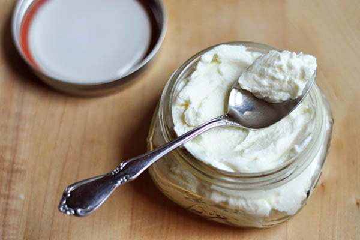

|
วิธีทำ กรีกโยเกิร์ต
| วิธีการทำ Greek Yogurt นั้นไม่ยากอย่างที่คิด เราสามารถทำได้เองที่บ้านง่าย ๆ โดยขั้นตอนการทำเริ่มต้น ก็จะเป็นวิธีเดียวกันกับการทำโยเกิร์ตแบบทั่วไปเลย คือ การต้มนมด้วยความร้อนสูง จากนั้นลดอุณหภูมิลงมาในระดับที่สามารถเพาะเชื้อแบคทีเรียได้ ก่อนจะนำหัวเชื้อใส่เข้าไปหมักให้นมบูด อย่างที่เราคุ้นหู เมื่อได้โยเกิร์ตแล้วขั้นตอนนี้ก็คือ ขั้นตอนที่จะเปลี่ยนโยเกิร์ตธรรมดาให้กลายร่างเป็น กรีกโยเกิร์ต ซึ่งวิธีการทำก็คือ การนำโยเกิร์ตเนื้อเหลวมากรองเอาน้ำออก ซึ่งวิธีบ้าน ๆ ที่เพื่อน ๆ สามารถทำได้ง่าย ๆ คือการใช้ผ้าขาวบาง กรองของเหลวออกจากตัวโยเกิร์ต โดยสามารถทิ้งไว้ข้ามคืน จนกว่าหางโยเกิร์ต และของเหลว จะกรองออกมาจนหมด เมื่อเนื้อโยเกิร์ตเริ่มแห้ง เราก็จะได้กรีกโยเกิร์ตที่มีเนื้อเหนียวเข้มข้นแล้ว การทำ Greek Yogurt จะใช้เวลามากกว่า โยเกิร์ตปกติถึงสองเท่า และต้องใช้โยเกิร์ตปกติในปริมาณมาก เพื่อที่จะได้กรีกโยเกิร์ต 1 ถ้วย นี่จึงเป็นสาเหตุว่าทำไม กรีกโยเกิร์ต หรือ โยเกิร์ตแบบเข้มข้น ถึงราคาแพงกว่าโยเกิร์ตปกติทั่วไปนั่นเอง |

|
|